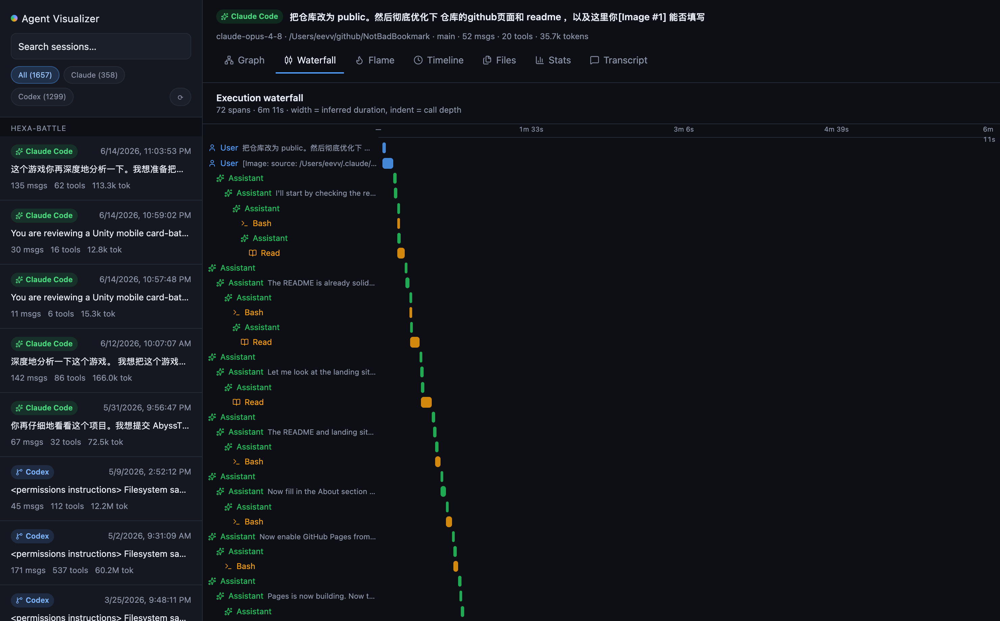
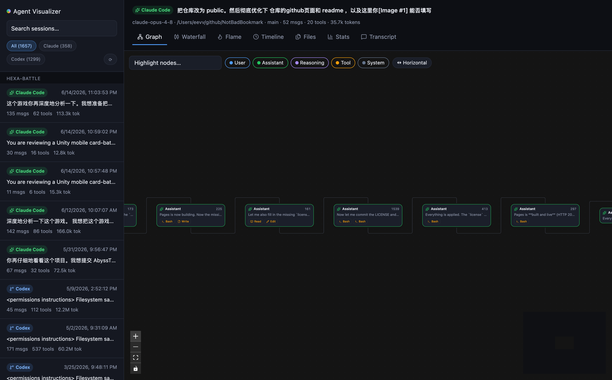
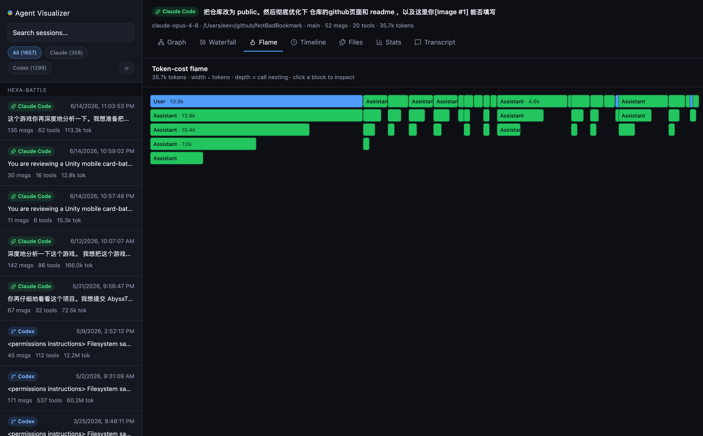
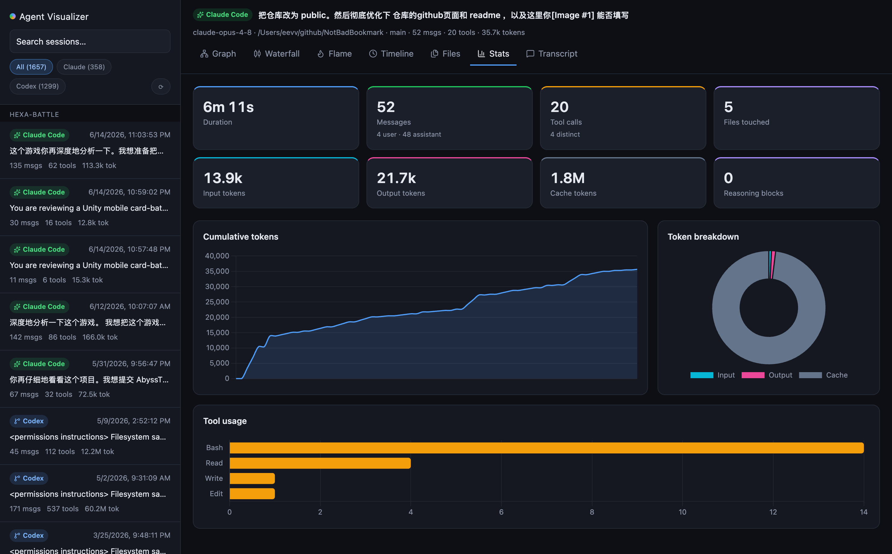
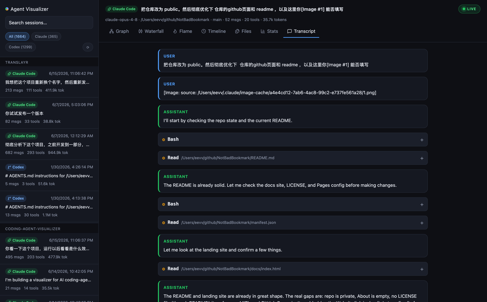

Claude Code and Codex record every session to disk — messages, reasoning, tool calls, file edits, tokens. Coding Agent Visualizer turns those raw JSONL logs into an interactive execution graph, a distributed-tracing span waterfall, a token-cost flame graph and a full analytics dashboard.





A dozen linked views
Pick a session and switch between views — all driven by one unified data model, so every agent source looks consistent.
The conversation as a compact left-to-right flow (dagre-layouted). Tool calls fold into chips, sub-agents branch off — no more endless staircase.
The distributed-tracing view every serious agent tool converged on: each event a span, indented by call depth, sized by inferred duration.
An icicle where width ∝ tokens and depth = call nesting. A token-heavy turn or sub-agent pops out instantly.
Every event on a time track with role colors — feel the rhythm, spot the long-running tools and the gaps.
Which files the session touched and how often, colored cool→hot by edit frequency.
Duration, message and tool counts, input/output/cache tokens, a cumulative-token sparkline and per-tool usage bars.
A clean, readable conversation with collapsible tool blocks for when you just want to read.
Click any node for full message / reasoning / tool I/O, with colored diffs for Edit & Write and one-click copy.
Watch a running session stream into every view in real time as the agent works — no refresh, no polling.
Zoom out from a single run to cost, tool trends and activity across all your sessions.
Save any session as Markdown or a self-contained shareable HTML file in one click.
Claude Code, Codex, Gemini, OpenCode and Cursor today — a new agent is just one adapter file.
How it works
A single Bun fullstack server serves both the UI and a tiny local-data API. No backend, no database, no telemetry.
Scans ~/.claude/projects and ~/.codex/sessions for session JSONL files.
Per-agent adapters map raw logs into one UnifiedSession model — nodes, tools, tokens, parent links.
Every view renders from that single model, so all sources look consistent and feel fast.
// one shape that every adapter normalizes into interface SessionNode { id: string; parentId: string | null; // DAG edges role: "user"|"assistant"|"tool"|"reasoning"; isSidechain?: boolean; // sub-agent branch text?: string; thinking?: string; tool?: { name: string; input: unknown; files?: string[] }; tokens?: { input: number; output: number }; }
Quick start
Requires Bun. Install it, then run the visualizer — no clone needed.
# 1 · Install Bun — macOS & Linux curl -fsSL https://bun.sh/install | bash # …or Windows (PowerShell) powershell -c "irm bun.sh/install.ps1 | iex" # 2 · Run it — no clone needed bunx coding-agent-visualizer@latest # → http://localhost:19876
Supported agents
Roadmap
Run bunx coding-agent-visualizer@latest and explore your own sessions in under a minute. No clone, no backend. MIT licensed.